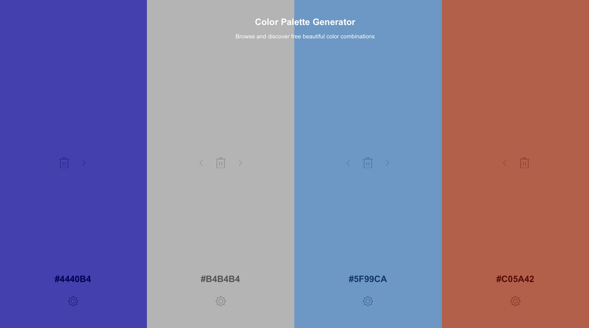

WDD 230: Web Frontend Development - Chamber of Commerce
Location Subject: Indianapolis, Indiana
Color Schema
Typography
Roboto
Site Name
Indianapolis Chamber of Commerce. This name represents the city in which the chamber operates.
Site Purpose
The Indianapolis Chamber of Commerce provides a way to cultivate a world-class environment which provides economic opportunity and prosperity for the people of Indiana and their enterprises. It provides leadership, busines strategies and direction to help our econmonic success. - indianapolischamber.org site description
Scenarios
What events will the chamber be holding this month that promote business-to-business networking? It will hold job fairs to help businesses connect wiht eachother and share ideas.
Where can I find contact information for the chamber's board of directors? There will be a contact page in the main homepage with information to connect with your leaders.
What award programs will be set up to encourage success? There will be company honors, community honors and individual honors for those who have excelled their field.